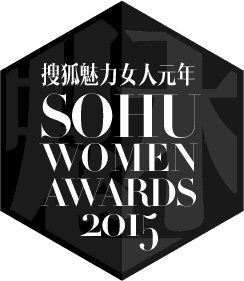

解码魅力女人
四位最有魅力的中国女性，四种珍贵的女性品质， 为中国女性魅力证言
刘嘉玲：花事正阑珊
最骄傲的美丽，秾丽里的坚忍，娇娆中的烂漫。与世界的相处，是敬爱更是敬畏，即便是痛楚的刺，张扬得不卑不亢。倔强的铿锵内化为力量，每一瓣都是自我的渗透，不拒绝时间不抗拒痛苦，了解和接受，才成就玲珑嘉运。
周冬雨：此去清风白日
有生之年的旖旎温暖，狭路相逢的君子之风，勿言幸运，所有的天真抵不过初心的本色，所有的幸运背后都是不曾被看见的努力。不骄不矜的年轻，辛苦亦有回甘，这样的美好多一天都是珍宝。世界，请温柔的等待她成熟。
郭采洁：给自己一次掌声
芬馥清风不竞繁美，皎洁无暇幽远飘逸。清淡如兰，顺其自然的命运里，沉稳振作；灿烂如花，优格女生迸发的女王能量。一生那么长，努力进修全心全意，如果没有天生会幸福的人，如果内心还有一些些害怕，那也是因为正正好好的时间里，尚年少且美好。
谭维维：自信可改变未来
被太阳亲吻的金色桂冠，是梵高笔下艳丽华美；坦坦荡荡不懂迂回的信念，是克丽泰仙女的光明希望。以仰望的姿态，无论何时，都踮着脚尖无限靠近梦想，成长的疼与痛，是阳光之下沉默酝酿的甸甸果实。真实的生活，是不表演只歌唱。